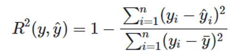
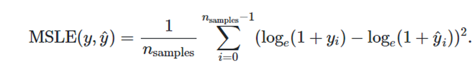

Evolución de casos activos de SARS-CoV-2 en Colombia
por Daniel García Alzate, Cristian Diaz Jaramillo y Victor Daniel Muñoz Jaramillo
Colombia no ha sido ajena a la crisis generada por la aparición del síndrome respiratorio agudo severo (COVID-19), enfermedad que ha llevado al limite a la sociedad debido a su impacto y a las medidas disruptivas, rigurosas y extremas que han tomado los gobiernos para controlar su transmisión, desde su reconocimiento como una pandemia mundial el 11 de marzo de 2020. Uno los principales elementos para la toma de decisiones ha sido el pronóstico y la modelación del total de casos diagnosticados, el total de casos activos, la cantidad de casos recuperados y las muertes esperadas, tanto en el corto como en el largo plazo.
En la literatura más relevante, la evolución de casos en general ha sido abordada de dos formas diferentes: la primera es mediante el uso de modelos SIR y sus variaciones (Susceptible-Infectado-Recuperado), que son básicamente modelos de simulación basados en supuestos muy fuertes sobre la evolución de la enfermedad. la segunda aproximación corresponde al uso de metodologías de pronóstico de series de tiempo (tanto estadísticas como de inteligencia artificial) para pronosticar los nuevos casos activos o los casos confirmados; sin embargo, esta aproximación también supone fuertes hipótesis sobre como se comporta la enfermedad.
Describir el objetivo y los alcances de lo que se quiere mostrar en esta publicación.
Entendimiento del negocio
La Covid – 19, ha representado un reto para la salud, la economía, la política y el manejo de las sociedades globales, las cuales han evidenciado la pérdida de un sin número de personas que día a día fallecen a causa de este virus que se transmite de humano a humano a través de las relaciones interpersonales que vivimos día a día, como, por ejemplo, las reuniones de oficina y amigos, los encuentros familiares y los demás contactos de nuestra propia cotidianidad.
Por tal razón, la predicción de aquello que puede suceder o la modelación de diferentes eventos, permite que las poblaciones, se preparen y puedan afrontar con efectividad cada uno de los riesgos y se deleguen los mecanismos que busquen salvaguardar la vida.
Entendimiento y Preparación de los datos
El primer paso, después de tener claro sobre qué se está trabajando y cómo están dispuestos los datos, es realizar un proceso de preparación de la información de manera que pueda ser usada en los modelos.
Para esta oportunidad se usa el conjunto de datos “Estado de Casos de Coronavirus COVID-19 en Colombia”, disponible en https://www.datos.gov.co/.
Lo primero que se hace es eliminar las columnas que no se van a usar en el análisis, dejando solamente las siguientes: ID del caso, Fecha de notificación, Ciudad de ubicación, FIS (Fecha de inicio de síntomas), Fecha de muerte, Fecha de recuperado.
La ID del caso, es usada como un indicador de la cantidad de casos reportados; la fecha de notificación, como la fecha de contagio en caso de que el paciente sea asintomático; la Ciudad de ubicación, como variable de agrupación; FIS, como la fecha de contagio para pacientes sintomáticos; la fecha de muerte y fecha de recuperado, como son descritas en su nombre. Es importante aclarar que existen ciertas inconsistencias en los datos, como fechas de recuperación previas a fechas de diagnóstico o reporte web, al hacer un análisis de los datos, se encontró que dichas inconsistencias se mitigaban casi por completo al usar la combinación descrita de FIS y fecha de notificación, como fecha de contagio.
El siguiente paso consiste en eliminar los datos correspondientes a ciudades diferentes de Bogotá, Medellín, Cali, Barranquilla y Cartagena. Y crear subconjuntos de datos por cada una de las ciudades previamente mencionadas.
En vista de que se requiere conocer el comportamiento de los casos confirmados, casos activos, casos nuevos, muertes (se decide trabajar este campo por día) y casos recuperados (también por día); y de antemano se deduce que las primeras dos son derivadas de las últimas tres; se crean series de tiempo que permitan desagregar la cantidad de casos para cada una de las tres últimas variables objetivo. Estas series de tiempo se construyen de longitudes idénticas, iniciando el 27 de febrero de 2020 (Fecha del primer caso según FIS) y finalizando n días antes del día en que se ejecute el código (estos n días antes tratan de mitigar los errores de información que pueden existir en los últimos días reportados y tiene un valor ajustable que por defecto está en 4).
Modelado
Una vez se tienen los datos preparados, se plantean varios modelos a corto y largo plazo, con el fin de anticipar posibles comportamientos del fenómeno.
Modelado a corto plazo
Para estos modelos, se propone un alcance inicial de 30 días que permita encontrar el punto en que se degrada el modelo para cada situación
Red Neuronal
Este es un modelo ampliamente usado en el pronóstico de series de tiempo inspirado en su homólogo biológico. Este consiste en un conjunto de unidades (neuronas), que se transmiten señales entre sí, estas señales se ven sometidas a diversas operaciones que permiten generar un valor de salida a partir de la información de entrada
Para la implementación de este modelo se decide no hacer alguna adecuación a la información de entrada, más que un escalado (MinMaxscaler) típico antes de la entrada a la red neuronal. Por medio de la gráfica de autocorrelación parcial y un pequeño proceso de optimización, se determina que aproximadamente 4 datos pasados determinan el dato futuro (para todas las series modeladas la autocorrelación parcial indica valores entre 3 y 6, pero un barrido muestra que un valor de 4 arroja buenos resultados para todas las series).
El modelado de la red neuronal se hace con el perceptrón multicapa para regresión, usando los siguientes parámetros:
- Tamaño de las capas ocultas: (4, ) por medio de un barrido de diferentes valores, se encuentra que este ofrece una respuesta adecuada para todas las series
- Función de activación: Relu, después de ensayar las diferentes funciones de activación se determina que ésta minimiza los errores.
- Tasa de aprendizaje: Adaptativa. Permite adaptar la tasa de aprendizaje de acuerdo con el comportamiento que vaya presentando la red neuronal ante una serie de tiempo específica.
- Alpha: 0.0001. Factor de regularización por penalidad L2, que permite mitigar un posible sobreajuste.
- Tasa de aprendizaje inicial: Se encuentra que en un valor con alta incidencia en los resultados, por tanto se hace una búsqueda específica para cada serie.
- Número máximo de iteraciones: 100 000
- Parada temprana: True. Permite evitar el sobreajuste
- Arranque en caliente: True. Permite reusar soluciones previas, pero se encuentra que no tiene mucha incidencia en los resultados
Para hacer el ajuste de los datos se usa una tasa de prueba/entrenamiento de 10/90. Se encuentra un modelo especial para hacer validación cruzada para series de tiempo, sin embargo, después de ensayarlo se determina que no es necesario usarlo.
Posteriormente se hace el entrenamiento de los datos y la predicción correspondiente sobre los datos conocidos. Como muchas de las series tienen sus valores iniciales en cero o muy cercanos a éste, algunas predicciones arrojan valores levemente inferiores a cero al inicio de ellas y por objetos conceptuales y para efectos de aplicabilidad de las métricas de error seleccionadas, se cambian estos valores negativos (muy cercanos a cero) por cero.
Posteriormente se hace el pronóstico a corto plazo, en el que se plantean 30 días hacia futuro, para poder tener una visión clara del punto en el que se degrada la serie. Finalmente, se desescalan los datos para retornar a las escalas originales.
El procedimiento indicado se realiza para las 5 principales ciudades de Colombia para los casos nuevos, recuperados y muertos. Para calcular los casos confirmados, se hace una suma acumulada de los casos nuevos y para calcular los casos activos se hace una suma acumulada de la serie que se obtiene al sustraer los casos muertos y recuperados de los casos activos.
En vista de los problemas que se encontraron con los datos (valores atípicos, saltos abruptos, etc) se realiza el modelo con los datos diarios y con un promedio de 4 días. Se encuentra que usando el promedio de 4 días se mitigan las inconsistencias en la información de entrada (esto se valida por inspección visual y con las métricas aplicadas) y por tanto se decide presentar el modelo usando el promedio de 4 días (el otro modelo también está disponible en el código)
ARIMA
Falta
Modelado a largo plazo
Modelo SIR
Falta
Evaluación
Métricas usadas
R2
El coeficiente de determinación determinación representa la proporción de la varianza que es explicada por las variables independientes en el modelo. Esta métrica proporciona una idea de la capacidad de ajuste de la serie y por tanto es una medida de que tan bien se pueden pronosticar valores desconocidos. Cuando se tiene un R2 entre 85 y 100%, se puede decir que el modelo tiene un buen desempeño (se debe tener cuidado con el sobreajuste). Por su parte un valor inferior a 70% indica que no necesariamente la variable dependiente puede explicarse bien con la variable independiente
Se decide usar R2, dado su potencial de indicar la capacidad que tiene una serie para ser ajustada y arrojar pronósticos aceptables. Teniendo en mente las limitaciones de esta métrica, se decide reforzarla con el error logarítmico cuadrático medio.
Error logarítmico cuadrático medio
Es una métrica que permite determinar el error de los valores pronosticados respecto a los valores reales. Ésta se usa cuando los errores son considerablemente altos, por lo que es deseable no penalizar grandes diferencias entre los valores pronosticados y reales. Una falencia de esta métrica es que penaliza la subestimación
En vista de que el orden de magnitud de los datos a tratar es considerable, se decide calcular el error mediante esta métrica y así no penalizar grandes diferencias.
Intervalos de confianza
falta
Desempeño de los modelos
Para los modelos empleados se aplican las métricas seleccionadas sobre los datos de entrenamiento y sobre los datos de prueba. Para evaluar el desempeño de cada modelo, se analizan las métricas a la luz de los valores obtenidos y del contraste entre resultados para sets de entrenamiento y prueba (principalmente)